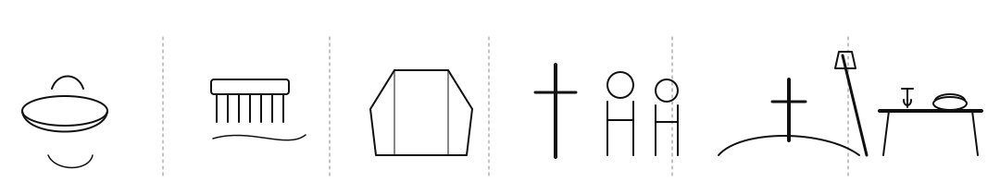
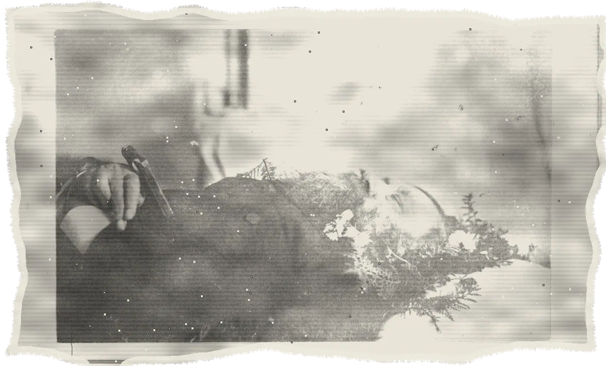

ЛИСТ B · 02 / 12
ТЕЛО
Омовение, одевание, вынос
Прежде чем стать памятью, умерший — предмет, с которым нужно обращаться. Это обращение и есть обряд.
Документировано в XIX–XX веках · Европейская Россия · Православная практика с местными обычаями

B / 01
Омовение
Тело обмывают (обмывание) до того, как одеть. Это дело, как правило, поручают людям со стороны ближайшей семьи — чаще пожилым женщинам, иногда тем, кто уже делал это прежде, — и работу понимают как услугу, которую нужно оплатить мылом, полотенцами или деньгами. Омовение практично, и оно же — граница: живые касаются мёртвого на расстоянии вытянутой руки, а потом моют руки сами.
Воду после омовения не выливают там, где семья берёт воду. В рассказах из разных губерний её уносят, выливают на пороге или отдают земле. Разнообразие здесь и есть суть: источники описывают запрет, окружающий удаление воды, а не один твёрдый способ.

B / 02
Одежда, припасённая заранее
Одежду для покойника во многих домах готовили при жизни и хранили: узелок, который в разных местах называли смертное — «смертная одежда». В него могли входить холст, рубаха или платье, чулки, иногда саван. Иметь его наготове считалось приличием, а отсутствие — небольшим скандалом.
Одетое тело клали в гроб, а гроб ставили так, чтобы покойник был обращён к образам. Это положение — довод, высказанный деревом и тканью: мёртвый ориентирован на образы спасения, а не на дом. Живые стерегут дверь; мёртвые занимают угол.
B / 03
Гроб как мебель
Гроб (гроб) в этнографии описывается с упором на простоту, но и с украшениями: крышка, платок, крест на крышке. В некоторых северных описаниях гробы выдалбливали из цельного ствола; к концу имперского периода стандартом стал гроб из пиленых досок, всё чаще купленный, а не сделанный.
Между этими двумя формами лежит коммерческая история, о которой обрядовые источники говорят редко: именно в гробе похоронная экономика становится видимой — сначала как столярное дело, потом как отрасль.
| Предмет | Документированная функция | Свидетельство |
|---|---|---|
| Гроб (гроб) | Вместилище; его несут до могилы; крышку закрывают во время обряда | документировано |
| Смертная одежда (смертное) | Готовится заранее; простая, новая или мало ношенная | документировано |
| Погребальная ткань / саван | Обёртывает или покрывает тело; региональные формы различаются | документировано |
| Мыло и полотенце | Плата омывающему; также выносятся из дома | документировано |
| Бумажный венчик на лбу | Предмет, который выдаёт церковь при православном погребении | здесь не проверено |


Аппарат источники · связанные листы · термины
Источники этого листа
- zelenin1916 Зеленин, Дмитрий Константинович — Очерки русской мифологии: умершие неестественною смертью и русалки (1916)
- ivanits1989 Ivanits, Linda J. — Russian Folk Belief (1989)
- tolstoy1995 Толстой, Никита Ильич (ред.); Толстая, Светлана Михайловна (ред. т. 5) — Славянские древности: Этнолингвистический словарь (1995–2012)
Ссылки, даты обращения и ограничения — в списке источников.